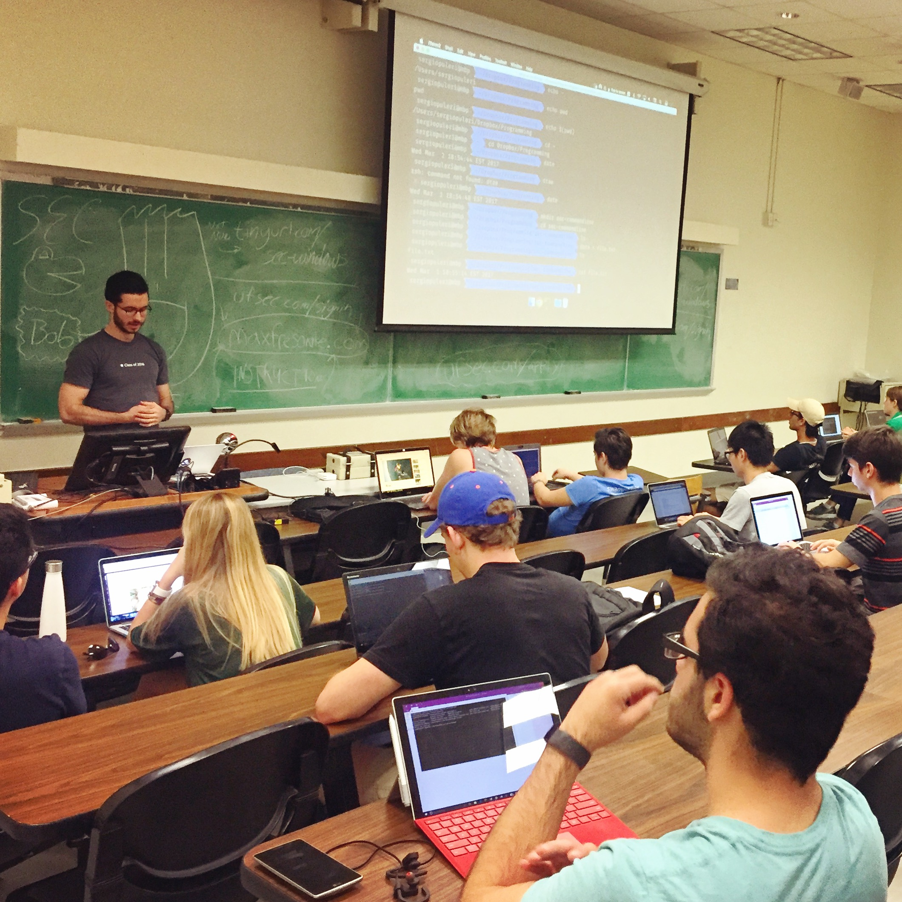

About
I'm Sergio. I'm currently a Software Engineer in Seattle. I'm a Florida boy and graduated from the Universtiy of Florida 🐊 with a CS degree in Spring 2017.
Currently I work at Facebook but idk what I'm doing yet.
I like to run, pick up heavy things, skateboard, make and drink coffee, try to become more productive.
Sometimes I make some things in my free time
My resume can be found here It should be up to date.
A cute timeline of my work experience can be found here